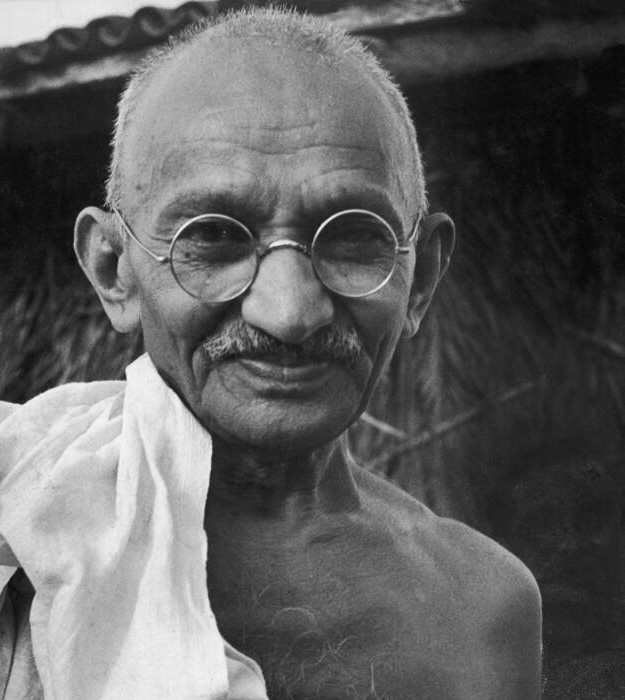

Mohandas Karamchand Gandhi
1869 - 1948
Early Life and Education
Mahatma Gandhi, born on October 2, 1869, into a devout Hindu family in Porbandar, Gujarat, India, was deeply influenced by the values of truth, simplicity, and nonviolence instilled by his parents. His upbringing in a traditional Indian household provided a strong moral foundation that would shape his future endeavors. Gandhi's education in law in London exposed him to the harsh realities of racial discrimination, igniting within him a fervent desire to fight against injustice wherever it existed. These formative experiences laid the groundwork for his later advocacy for social justice and equality.
Biographies
- Leadership in India's Independence Movement
- Philosophy of Satyagraha
- Principles of Self-Discipline and Swaraj
- Global Influence
- Tragic End and Lasting Legacy